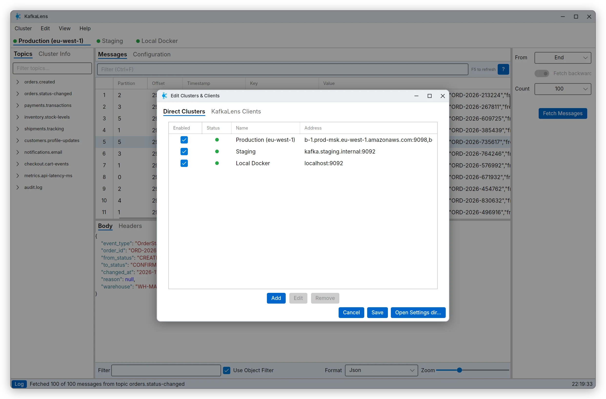
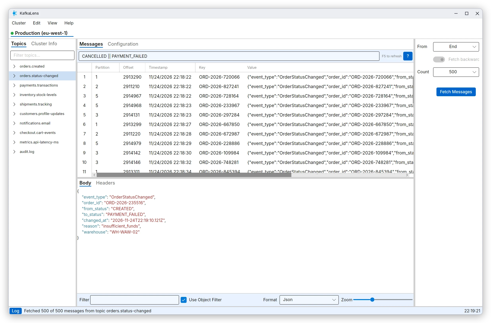
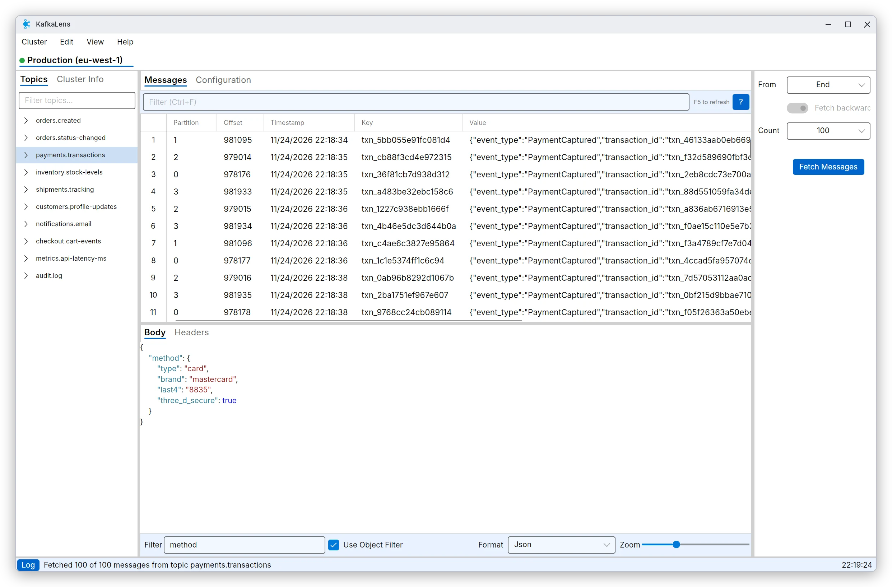
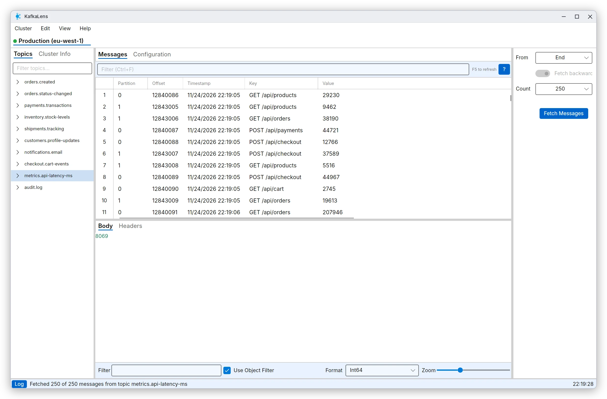
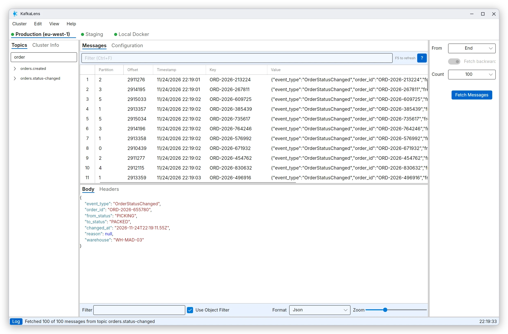

Fast, secure Kafka message browsing — even inside private VPCs.
Connect directly to Kafka or install a lightweight read-only backend inside your VPC. Filter, search, and decode messages with precision.

Secure, Powerful Kafka Message Inspection
Lightning Fast
Optimized for high-volume message browsing with minimal resource usage.
Two-Tier Architecture
Backend service runs inside your VPC and exposes read-only gRPC. Desktop app connects securely without direct Kafka exposure.
Developer First
Filter, search, and decode messages using Text, Number, JSON, or custom decoders tailored to your data format.
Native Everywhere
True cross-platform support. Whether you're on Windows, macOS (Silicon/Intel), or Linux, enjoy a consistent, high-fidelity experience.
KafkaLens in 90 Seconds
Connect, browse, filter and decode — a quick tour of the essentials.
See KafkaLens in Action
Secure Access to Private Clusters
Connect directly to any broker, or reach Kafka clusters inside your VPC without exposing them publicly: install a lightweight backend service that exposes a read-only gRPC interface consumed by the desktop app.

Find the Message You Need
Fetch from the end, the start, any timestamp or offset. Then narrow thousands of messages down instantly
with boolean filters like CANCELLED || PAYMENT_FAILED.

Read Big Payloads Comfortably
JSON is pretty-printed and highlighted. The object filter trims a large event down to just the fields you care about, and headers are one click away.

Decode Binary Data
Pick a formatter per topic — JSON, text, signed and unsigned integers — or add your own through plugins for proprietary formats.

Many Clusters, One Window
Open production, staging and local clusters side by side in tabs. Save messages to disk and reopen them later, even offline.

Easy on the Eyes
Light and dark themes, adjustable font size, and layouts you can resize to fit your screen.

What Our Users Say
"KafkaLens has completely changed how I interact with our Kafka clusters. The UI is fast, responsive, and actually intuitive."— Senior Backend Engineer
"Finally a Kafka client that doesn't feel like it was built in the 90s. The JSON formatting and filtering are lifesavers."— DevOps Lead
Ready to master your Kafka clusters?
Join developers worldwide using KafkaLens to simplify their daily tasks.
Download KafkaLens Now